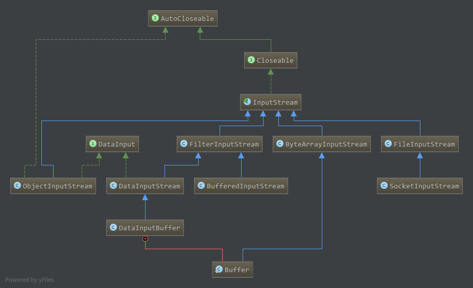
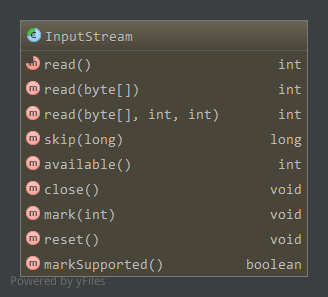
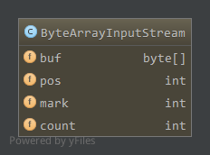
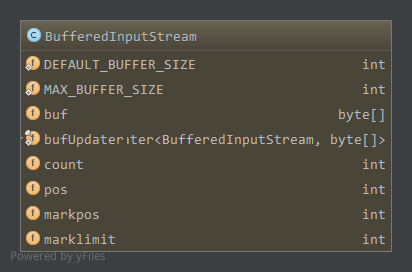
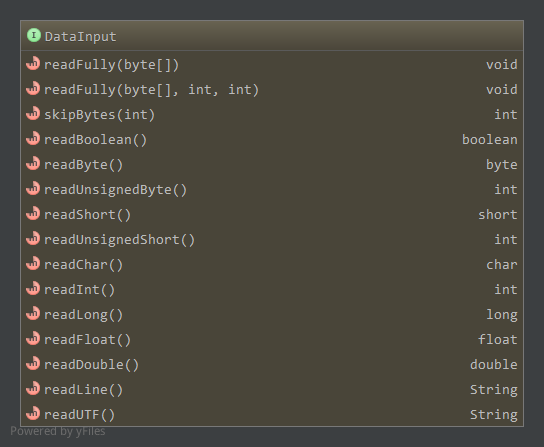
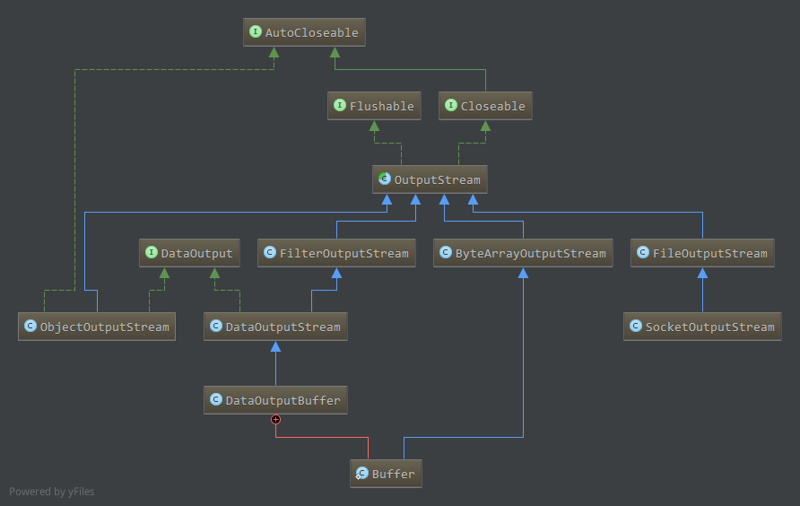

1. Java输入流
常用输入流的类图:

主要包括ByteArrayInputStream，FileInputStream，SocketInputStream以及url.openStream获得的从不同来源读取数据的底层流。ByteArrayInputStream从其包裹的字节数组中读取数据，字节数组中的数据在构建时初始化，该流对象记录了字节数组的当前读取位置，最大可读取位置等信息。FileInputStream从文件中读取数据，这依赖于系统。SocketInputStream在依赖于Socket通信的网络中读取数据。
而URL打开的输入流则通过URLConnection读取数据。
这些都是不同的数据来源。
而FilterInputStream子类为基础流的封装，实现了更加丰富的功能。BufferedInputStream维护了一个字节数组缓冲，当读取数据时，如果字节数组中有之前读取到缓冲区的数据，直接从缓冲区中读取数据。而如果字节数组缓冲中没有数据，需要从底层流中读取数据到缓冲区中，然后从缓冲区中读取。中间还涉及缓冲的拷贝，扩容等。DataInputStream实现了DataInput接口，因此支持read*等一次性读int，long等数据的功能，实际上在底层流中相应的读取对应字节长度的数据，够造成对应的数据类型。DataInputBuffer是Hadoop中的一个数据读取缓冲区，底层流是其内部类Buffer，而Buffer又是ByteArrayInputStream的子类，只不过允许重新设置底层的输入字节数组(reset)。而DataInputBuffer又实现了DataInput接口，因此支持从底层字节数组中进行read*等读操作，且支持reset操作。
ObjectInputStream为Java反序列化相关，可以封装底层流，然后使用ObjectInputStream的readObject方法反序列化底层流的数据为一个对象。
另外，所有的流实现了AutoCloseable接口，即支持在try语句中打开流时，会自动在try-catch-finally结束时调用close方法关闭。
2. InputStream
首先看下抽象类InputStream支持的方法:

read，读取一个字节，或者读取指定长度的字节到字节数组，当读取到流尾部时返回-1，会阻塞skip，从当前流位置跳过指定长度，可能因为种种原因(如到达流末尾)跳过的字节数不为指定的字节数，实际跳过的字节数为返回值。如果指定的长度为负数，则返回0且不执行跳过操作，子类可以对此有不同的实现。在该类中，只是简单的读取指定长度的数据到临时字节数组中来达到效果，子类可以有更高效的实现。available，返回流中剩余的字节数，在InputStream中永远返回0，子类应该实现该方法- close，关闭输入流，释放相应的系统资源
mark(limit)，标记当前位置以便之后通过reset方法从标记位置重新读取，limit为标记后最大可读取的字节数，如果流中当前读取到的位置position>mark值+limit，则标记无效，无法通过reset重新从标记处读取。
其实可以猜测，如果我们从Socket中读取数据并标记在当前位置，那么之后要想reset到标记位置读取数据，应该在标记后每次读取都缓存，那么这个缓存大小便是有限的，有限值便是limit。reset，重置当前读取位置到最近mark方法调用的位置处。- 支持标记，即markSupported为true
- 没有标记，即从流创建后没有调用mark方法,或者当前位置position>mark+limit，即当前读取位置超过了最近一次标记所允许的限制，抛出IOException
- 如果没有抛出异常，则会将读取位置重置到最近一次标记位置处开始读取
- 不支持标记，即markSupported为false
- 可能抛出IOException异常
- 如果没有抛出异常，则可能重置为固定的状态，这依赖于具体的流以及流创建的方式，同时接下来读取到的数据也依赖于具体的流
- 支持标记，即markSupported为true
markSupported，是否支持mark和reset方法，与实际的流有关，InputStream返回false
3. ByteArrayInputStream
字节数组输入流，从该流中读取的数据保存在字节数组成员中，流对象记录了字节数组当前读取的位置以及可以允许读取的最大位置等信息，字节数组在创建流时初始化。
成员属性如下:

buf,保存数据的字节数组，流数据来源pos，下一个读取字节在buf中的位置，即下一个读取的字节为buf[pos]mark，当前标记的位置，创建时标记在0处count,输入流合法字节的下一个位置
3.1 构造
1 | public ByteArrayInputStream(byte buf[]) {//通过完整的字节数组构造 |
3.2 数据读取read
1 | public synchronized int read() {//读取到流尾部返回-1 |
如上，读取指定长度的数据时，如果当前已经到达流末尾则返回-1，否则读取min(len,(count-pos))大小的数据
3.3 跳过skip
1 | public synchronized long skip(long n) { |
如上，因为数据保存在字节数组中，因此只需改变pos的位置即可，而不用像InputStream中读取数据到临时字节数组中。
n小于0时不变，否则跳过的大小为min(n,(count-pos))
3.4 标记mark
1 | public void mark(int readAheadLimit) { |
记录当前位置pos在mark中，这里注意的是readAheadLimit没有影响，因为所有的数据就在字节数组buf中
3.5 关闭close
1 | public void close() throws IOException {} |
关闭ByteArrayInputStream对该流没有影响
3.6 其他
1 | public synchronized int available() { return count - pos; } |
4. FileInputStream
4.1 成员属性
1 | //文件描述符对象，用于处理打开的文件，可被多个文件输入流共享 |
4.2 构造
通过文件名或文件对象构建1
2
3
4
5
6
7
8
9
10
11
12
13
14public FileInputStream(String name) throws FileNotFoundException {
this(name != null ? new File(name) : null);
}
public FileInputStream(File file) throws FileNotFoundException {
...//安全性，合法性检查
fd = new FileDescriptor();//创建文件描述符
fd.attach(this);//文件描述符和流绑定
path = name;
open(name);//打开文件
}
private void open(String name) throws FileNotFoundException {
open0(name);
}
private native void open0(String name) throws FileNotFoundException;
可见，主要创建了文件描述符对象，然后通过本地实现打开文件
通过其他文件描述符对象构建1
2
3
4
5
6
7public FileInputStream(FileDescriptor fdObj) {
...//安全性合法性检查
fd = fdObj;
path = null;//路径为null
//文件描述符被多个文件输入流共享
fd.attach(this);
}
4.3 关闭
1 | public void close() throws IOException { |
如果打开了文件通道，则关闭文件通道，同时关闭共享同一文件描述符的所有文件输入流，最终的关闭通过本地方法close0来实现
4.4 本地方法
文件输入流的大部分操作都是通过本地方法来实现1
2
3
4
5
6public native int available() throws IOException;
public native long skip(long n) throws IOException;
private native int readBytes(byte b[], int off, int len) throws IOException;//指定长度的read方法调用
private native int read0() throws IOException;//被read()方法调用
private native void open0(String name) throws FileNotFoundException;//打开文件
private native void close0() throws IOException;
4.5 getChannel
获取该文件输入流关联的唯一的通道对象，通道的位置等于到目前为止读取的字节数。从流中读取数据将增加通道的位置position，同样的，通过显式的position方法或者从通道中读数据，会改变流的位置。
5. FilterInputStream
FilterInputStream在底层流的基础上实现更加丰富的功能，该类本身所有方法都是直接调用底层流的方法。
底层输入流:1
protected volatile InputStream in;
构造:1
protected FilterInputStream(InputStream in) { this.in = in; }
方法和InputStream一样，通过调用底层输入流in的相应方法，如1
public int read() throws IOException { return in.read(); }
其他类似。
6. BufferedInputStream
BufferedInputStream实现了FilterInputStream，在底层流的基础上添加了额外的功能，能够缓存输入数据并且支持mark和reset操作。
当BufferedInputStream创建时，同时会创建一个内部缓冲数组。当从中读取或者skip数据时，可能会从底层流中重新填充内部缓冲数组，一次填充大量字节。
6.1 成员属性

DEFAULT_BUFFER_SIZE，内部缓冲数组缺省大小，8KBMAX_BUFFER_SIZE，缓冲数组最大大小，Integer.MAX_VALUE-8，超出此值时可能抛出OutofMemoryError异常buf,内部缓冲数组bufUpdater，保存每次内部缓冲大小的改变count，最后一个合法字节在缓冲数组位置+1pos，下一个要读取字节在缓冲数组位置markpos，标记位置marklimit，标记后最大可读偏移量，当pos-markpos>marklimit时，标记位置无效
[0,markpos-1]为无效数据，可以覆盖，[markpos,count-1]为可以通过reset重新读取的区域，[pos,count-1]为有效数据，当前可以读取
6.2 构造
1 | public BufferedInputStream(InputStream in) { this(in, DEFAULT_BUFFER_SIZE); } |
使用给定的输入流初始化底层流，然后构建大小为size的内部数组
6.3 数据读取
6.3.1 单个字节读取
1 | public synchronized int read() throws IOException { |
如上，如果内部缓冲中没有可用数据，则需要通过fill从底层流中读取数据到内部缓冲中，进行填充后内部缓冲还是没有数据，则表明底层流没有数据返回-1。当内部缓冲有数据时，从内部缓冲中读取下一个可读取的字节返回。1
2
3
4
5
6
7
8
9
10
11
12
13
14
15
16
17
18
19
20
21
22
23
24
25
26
27
28
29
30
31
32
33
34
35
36private void fill() throws IOException {
byte[] buffer = getBufIfOpen();//获取内部缓冲buf
if (markpos < 0)//没有标记，即我们不需要回溯到之前读取的位置重新读取，pos之前的数据已经没用了，直接pos=0，重用内部缓冲
pos = 0; /* no mark: throw away the buffer */
else if (pos >= buffer.length) //内部缓冲没有剩余空间
if (markpos > 0) {//此时从0-markpos部分数据没用了，将markpos-pos部分数据拷贝到0开始处，pos=pos-markpos，重用部分内部缓冲
int sz = pos - markpos;
System.arraycopy(buffer, markpos, buffer, 0, sz);
pos = sz;
markpos = 0;
} else if (buffer.length >= marklimit) {此时markpos=0，pos-markpos>=marklimit，markpos无效，清除，pos置0，重用整个内部缓冲
markpos = -1; /* buffer got too big, invalidate mark */
pos = 0; /* drop buffer contents */
} else if (buffer.length >= MAX_BUFFER_SIZE) {//内部缓冲超出了最大限制，抛出异常
throw new OutOfMemoryError("Required array size too large");
} else {//即无法重用内部缓冲，且pos到markpos没有超出marklimit限制，缓冲区没有超出最大限制，重新分配一个更大的内部缓冲
//扩大1倍还没达到最大限制，则扩大一倍，否则为最大限制
int nsz = (pos <= MAX_BUFFER_SIZE - pos) ? pos * 2 : MAX_BUFFER_SIZE;
if (nsz > marklimit) nsz = marklimit;
byte nbuf[] = new byte[nsz];
System.arraycopy(buffer, 0, nbuf, 0, pos);//拷贝原来数据到新缓冲区中
if (!bufUpdater.compareAndSet(this, buffer, nbuf)) {
// Can't replace buf if there was an async close.
// Note: This would need to be changed if fill()
// is ever made accessible to multiple threads.
// But for now, the only way CAS can fail is via close.
// assert buf == null;
throw new IOException("Stream closed");
}
buffer = nbuf;
}
count = pos;
int n = getInIfOpen().read(buffer, pos, buffer.length - pos);//从底层流读取新的数据到缓冲区
if (n > 0)
count = n + pos;//更新count值
}
如上，如果没有标记，则pos之前的数据不会用到，直接将pos置为0，重用该内部缓冲区即可。
而如果markpos大于0，则[0,markpos-1]部分数据无用，将[markpos-pos]间数据拷贝到[0,markpos-pos-1]，markpos置为0，然后从底层流中读取数据填充后面部分。
而当markpos为0时，pos=pos-markpos，如果没有超过marklimit限制，分配两倍大小空间，拷贝原来数据到新缓冲区，从底层流中读取数据到新缓冲区拷贝位置之后。否则超过了marklimit了，清除markpos标识，pos置0，重用该空间。可见，其实如果marklimit小于缓冲区最大限制的话，缓冲区最大就是marklimit的大小，不会扩容到缓冲区最大限制。
6.3.2 指定长度数据读取
1 | public synchronized int read(byte b[], int off, int len) throws IOException { |
如上，循环通过read1读取一定长度的数据，直到读取到指定长度数据或到达流末尾，或者流关闭。
在read1中，内部缓冲区有可读数据则直接拷贝，否则如果我们请求的长度大于内部缓冲长度，则如果此时没有标记的话，没必要先从流中读到内部缓冲，再将内部缓冲中刚才读取的全部数据拷贝到输出数组b中，直接从底层流中读取数据到输出数组。而如果有标记则不能直接从流中读取，否则若reset的话，中间部分数据丢失了。
6.4 skip
1 | public synchronized long skip(long n) throws IOException { |
如上，如果内部缓冲还有可跳过(读)的数据，将pos往前移即可。否则，如果没有设置标记，则直接从底层流中跳过，而不进行缓存，如果设置了标记便不能从流中跳过，需要填充到内部缓冲中，因为之后可能reset重新读取这部分数据。跳过的数据为指定的值和内部缓冲有效数据的最小值，可能实际跳过的值小于指定的值n，实际跳过的值为返回值。
6.5 available
1 | public synchronized int available() throws IOException { |
返回的是内部缓冲可用值和底层流可用值之和，两者大于Integer.MAX_VALUE时，返回Integer.MAX_VALUE。
6.6 其他
1 | public synchronized void mark(int readlimit) { |
简单的设置marklimit和markpos的值。那么markSupported肯定返回true1
public boolean markSupported() { return true; }
重置也是简单的将pos设置为markpos1
2
3
4
5public synchronized void reset() throws IOException {
getBufIfOpen(); // Cause exception if closed
if (markpos < 0) throw new IOException("Resetting to invalid mark");
pos = markpos;
}
还有两个安全性检查的方法，获取内部缓冲，底层输入流异常时抛出IOException1
2
3
4
5
6
7
8
9
10private byte[] getBufIfOpen() throws IOException {
byte[] buffer = buf;
if (buffer == null) throw new IOException("Stream closed");
return buffer;
}
private InputStream getInIfOpen() throws IOException {
InputStream input = in;
if (input == null) throw new IOException("Stream closed");
return input;
}
7. DataInput
该接口提供了从输入流中读取系列字节，然后构造成基本类型，或者字符串的方法。
提供的方法如下:

readFully，正常情况读取指定长度数据到字节数组中(循环判断读取)skipBytes，跳过指定字节read*，读取指定长度的字节，构造相应的基本类型readLine,从流中读取一行，遇到行结束符或文件结束符时结束一行读取,没有读取到一个字节时返回null，其中每一个字符都小于256readUTF，从流中读取字符串，流中的数据为UTF-8编码格式。
首先，通过readUnsignedShort方法读取两个字节，值为字符串的UTF-8编码长度。然后:- 如果第一个字节满足
0xxxxxxx的形式，那么该字符串仅有一个字节 - 如果第一个字节满足
110xxxxx的形式，那么该字符串有两个字节，如果第二个字节不存在或者不是10xxxxxx的形式，那么抛出UTFDataFormtException异常，该字符串为(char)(((a & 0x1F) << 6) | (b & 0x3F)) - 如果第一个字节满足
1110xxxx，那么该字符串有3个字节，如果第三个字节不存在或者第二个/第三个字节不满足10xxxxxx的形式，那么抛出UTFDataFormtException异常，否则该字符串为(char)(((a & 0x0F) << 12) | ((b & 0x3F) << 6) | (c & 0x3F)) - 如果第一个字节满足
1111xxxx或10xxxxxx的形式，抛出UTFDataFormtException异常。 - 如果在处理过程中到达了文件尾，抛出
EOFException异常
- 如果第一个字节满足
对应UTF-8的编码过程。
8. DataInputStream
DataInputStream继承FilterInputStream基础上实现了DataInput接口，即为底层流实现了read*系列功能。
8.1 成员和构造
成员主要为使用的缓冲区1
2
3
4private byte bytearr[] = new byte[80];//readUTF使用的缓冲，将实际字节读到该缓冲区
private char chararr[] = new char[80];//readUTF使用的缓冲，解码出来的字符
private char lineBuffer[];//readLine使用的缓冲，除结束符外读到该缓冲，转换为字符
private byte readBuffer[] = new byte[8];//readLong使用的缓冲，8个字节
构造函数简单的将给定的底层流传给FilterInputStream1
public DataInputStream(InputStream in) { super(in); }
8.2 基本类型数据读取
8.2.1 read指定长度字节
指定长度字节的read直接使用底层流1
2
3
4
5
6public final int read(byte b[]) throws IOException {
return in.read(b, 0, b.length);
}
public final int read(byte b[], int off, int len) throws IOException {
return in.read(b, off, len);
}
8.2.2 readFully和skipBytes
提供了readFully，尽量读取指定长度数据，除非流末尾，这对BufferedInputStream这种底层流有效果(一次read完内部缓冲区可用数据，没达到指定长度，继续从流中读取数据到内部缓冲，然后读取)1
2
3
4
5
6
7
8
9
10
11
12public final void readFully(byte b[]) throws IOException {
readFully(b, 0, b.length);
}
public final void readFully(byte b[], int off, int len) throws IOException {
if (len < 0) throw new IndexOutOfBoundsException();
int n = 0;
while (n < len) {//循环读取，直到流末尾，抛出EOFException异常
int count = in.read(b, off + n, len - n);
if (count < 0) throw new EOFException();
n += count;
}
}
而与readFully类似，提供了skipBytes，尽量跳过指定字节，除非流末尾1
2
3
4
5
6
7
8public final int skipBytes(int n) throws IOException {
int total = 0;
int cur = 0;
while ((total<n) && ((cur = (int) in.skip(n-total)) > 0)) {//循环skip
total += cur;
}
return total;
}
8.2.3 read*系列读取基本类型
基本思想就是读取指定长度的数据，如Boolean 1字节，Byte 1字节，Short 2字节，Char 2字节，Int 4字节，Long 8字节，Float 4字节，Double 8字节。
每个字节使用int值存储，这样如果对应int为-1表示到达流末尾，抛出异常。正常数据将读取到的n个字节转换为对应的类型。
整型1个字节的直接转换，大于1个字节的按字节序平移转换。
浮点型，Float读取4个字节转换为int然后通过Float.intBitsToFloat(int)转换为float，Double读取8个字节转换为Long然后通过Double.longBitsToDouble(long)转换为double。
另外，还支持读取无符号型的整数，包括readUnsignedByte和readUnsignedShort，读取字节数一样，只不过因为Java所有的整型值为有符号型，因此通过int值保存转换后的byte或short值，读取该int值即为对应的无符号值。
代码不全贴了，示例:1
2
3
4
5
6public final short readShort() throws IOException {
int ch1 = in.read();
int ch2 = in.read();//读取两个字节
if ((ch1 | ch2) < 0) throw new EOFException();//检查是否到达流尾部
return (short)((ch1 << 8) + (ch2 << 0));//转换
}
8.2.4 readLine和readUTF
readLine一次读取一行数据转换为String，只是简单的将除行结束符和文件结束符之外的每一个读取到的字节转换为字符，遇到行结束符或文件结束符即结束读取，目前该方法已经被声明为Deprecated了，且代码简单，这里不再分析。
readUTF读取时，流中的数据为UTF8编码的字节数据，首先两个字节为编码数据长度，然后才是实际编码数据，将这些编码数据解码输出为字符串。
具体格式见上DataInput接口对该方法的说明1
2
3
4
5
6
7
8
9
10
11
12
13
14
15
16
17
18
19
20
21
22
23
24
25
26
27
28
29
30
31
32
33
34
35
36
37
38
39
40
41
42
43
44
45
46
47
48
49
50
51
52
53
54
55
56
57
58
59
60
61
62public final String readUTF() throws IOException {
return readUTF(this);
}
public final static String readUTF(DataInput in) throws IOException {
int utflen = in.readUnsignedShort();//两个字节的长度
byte[] bytearr = null;
char[] chararr = null;
...//分配缓冲，如果in为DataInputStream，可能用到in的成员
int c, char2, char3;//3个临时值，一个UTF8字符编码最多3个字节
int count = 0;//字节计数
int chararr_count=0;//字符计数
in.readFully(bytearr, 0, utflen);//从流中读取编码长度的数据到bytearr中
while (count < utflen) {//处理开始部分的1个字节的编码数据
c = (int) bytearr[count] & 0xff;
if (c > 127) break;
count++;
chararr[chararr_count++]=(char)c;//小于127，为0xxx xxxx格式，该字符只有这一个字节，直接转换为字符
}
while (count < utflen) {
c = (int) bytearr[count] & 0xff;
switch (c >> 4) {
case 0: case 1: case 2: case 3: case 4: case 5: case 6: case 7://只有一个字节，直接转换为字符
/* 0xxxxxxx*/
count++;
chararr[chararr_count++]=(char)c;//直接转换
break;
case 12: case 13://两个字节
/* 110x xxxx 10xx xxxx*/
count += 2;
if (count > utflen)//第二个字节不存在，抛出UTFDataFormatException异常
throw new UTFDataFormatException(
"malformed input: partial character at end");
char2 = (int) bytearr[count-1];//第二个字节
if ((char2 & 0xC0) != 0x80)//第二个字节不是10xx xxxx格式，抛出UTFDataFormatException异常
throw new UTFDataFormatException("malformed input around byte " + count);
chararr[chararr_count++]=(char)(((c & 0x1F) << 6) | (char2 & 0x3F));//正常数据，转换
break;
case 14://三个字节
/* 1110 xxxx 10xx xxxx 10xx xxxx */
count += 3;
if (count > utflen)//第3个字节不存在，抛出UTFDataFormatException异常
throw new UTFDataFormatException("malformed input: partial character at end");
char2 = (int) bytearr[count-2];//第二个字节
char3 = (int) bytearr[count-1];//第三个字节
if (((char2 & 0xC0) != 0x80) || ((char3 & 0xC0) != 0x80))//第二个或第三个字节不是10xx xxxx格式，抛出UTFDataFormatException异常
throw new UTFDataFormatException( "malformed input around byte " + (count-1));
//正常数据，转换
chararr[chararr_count++]=(char)(((c & 0x0F) << 12) |
((char2 & 0x3F) << 6) |
((char3 & 0x3F) << 0));
break;
default://第一个字节为10xx xxxx或1111 xxxx格式，抛出UTFDataFormatException异常
/* 10xx xxxx, 1111 xxxx */
throw new UTFDataFormatException( "malformed input around byte " + count);
}
}
return new String(chararr, 0, chararr_count);//解码出来的字符数组构建String对象，返回
}
如上，流程与上面DataInput对readUTF8格式完全吻合，只不过这里预先处理开始部分只有一个字节的字符情况，如果所有字符都是只有一个字节则全部数据在第一个循环中处理完。
9. DataInputBuffer
从内存缓冲中读取数据的可重用DataInput接口实现，继承自DataInputStream
9.1 成员属性
成员为内部类DataInputBuffer.Buffer1
private Buffer buffer;
Buffer其实为可重用的ByteArrayInputStream1
2
3
4
5
6
7
8
9
10
11
12
13
14
15
16private static class Buffer extends ByteArrayInputStream {
public Buffer() {
super(new byte[] {});
}
public void reset(byte[] input, int start, int length) {
this.buf = input;
this.count = start+length;
this.mark = start;
this.pos = start;
}
public byte[] getData() { return buf; }
public int getPosition() { return pos; }
public int getLength() { return count; }
}
我们知道ByteArrayInputStream的内部缓冲在创建时指定，无法修改，这里通过reset方法重新设置其内部缓冲，达到重用该流的效果。
9.2 构造
1 | public DataInputBuffer() { this(new Buffer()); } |
因此，底层输入流为Buffer对象，即为ByteArrayInputStream，数据保存在字节数组中
9.3 其他方法
1 | public void reset(byte[] input, int length) { buffer.reset(input, 0, length); } |
我们在创建DataInputBuffer后，可重复设置底层的字节数组来重用创建的DataInputBuffer对象，想这样1
2
3
4
5
6while (... loop condition ...) {
byte[] data = ... get data ...;
int dataLength = ... get data length ...;
buffer.reset(data, dataLength);
... read buffer using DataInput methods ...
}
10. ObjectInputStream
对象反序列化使用的流，从流中反序列化数据为一个对象。相应的对象必须实现Serializable或Externalizable。
反序列化包括对象的类，类签名，类的所有非暂态(transient)和非静态成员。
反序列化基本类型可使用DataInput的相关方法，反序列化对象readObject方法。
典型使用:1
2
3
4
5
6
7
8//序列化
SomeClass object=...//实现Serializable
ObjectOutputStream output=new ObjectOutputStream(otherOutput);//otherOutput为序列化输出的流，可以为文件流，字节流等
output.writeObject(object);
//反序列化
ObjectInputStream input=new ObjectInputStream(otherInput);//otherInput为序列化输出流对应构建的输入流
SomeClass object=(SomeClass)input.readObject();
具体代码不再分析。
11. Java输出流
与前面分析的输入流对应的输出流类图如下:

各流对应功能原理类似，不再具体分析源代码